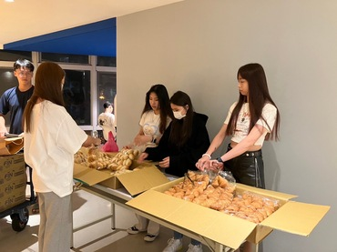

個人基本資訊
姓名：鄭夙妙
性別：女
星座：摩羯座
血型：O型
年齡：19歲
就讀學校與系所：中原大學資訊管理學系
個人特質：細心、溫和、友善
興趣：聽音樂、追劇
個人slogan：人生很短暫，不要錯過了
個人經歷
(1)工作經驗
這份工作我從今年七月開始做，到現在也有五個月了，這份工作主要是服務客人，
從這份工作當中讓我感受到原來服務業是很辛苦的，也讓我知道世界上有很多不同
個性的人，面對每個不同個性的人就要用不同的方式溝通，總結來說這份工作我學
習到最多的就是如何透過溝通讓客人覺得舒適。

會成為熱誠幹部可以說是陰錯陽差，本來我以為當幹部會很累，需要花很多時間在
這件事情上面，但其實把一些該做的事情做好也沒有真的很累，而且我也因為這個
身分學習到了一些事情，就像是因為我剛好被分配到要管理的寢室都是外國人，所
以溝通上我幾乎都要用英文，因為這樣讓我有多一個說英文的機會。